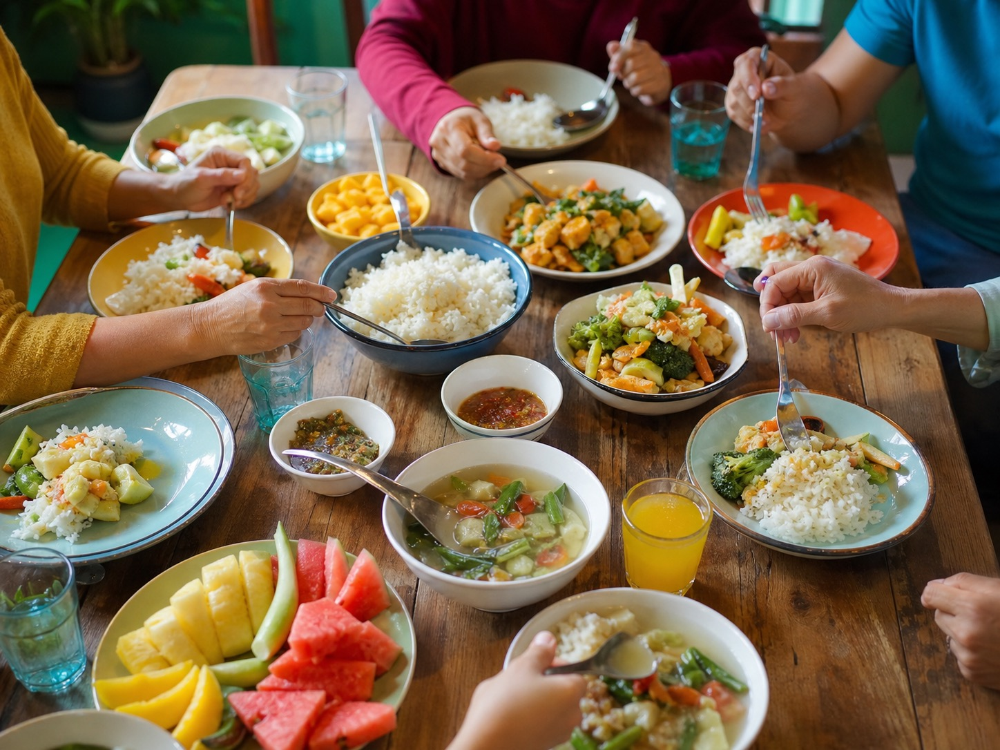

はらっぱのこと
気どらない、
まちのくつろぎ場所。
おいしいコーヒーと、ほっとするごはん。
ベビーカーでも、おじいちゃんおばあちゃんでも、ひとりでふらっとでも。
原っぱに寝ころぶみたいに、肩の力を抜いて過ごせる場所をめざしています。

こだわりの一杯
自家焙煎の豆を一杯ずつていねいに。ノンカフェインやキッズドリンクも。

手づくりごはん
地元の野菜を使った日替わりごはんと、やさしい味のおやつ。

気がねなく
キッズスペースに絵本。泣いても、こぼしても、大丈夫な空気。